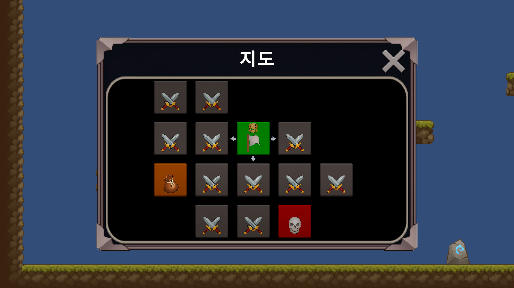

[엘에스웨어 협력] 외부 모듈 검증 프레임워크
외부 모듈 통합 테스트 환경 구축 및 실무진 건의를 통한 인스펙터(Inspector) 사용성 개선

- Partner
- 엘에스웨어 — 외부 모듈 통합 검증 및 실무진 협업
- Period
- 2026.05 ~ 2026.08
- Team
- 1인 (클라이언트/모듈 검증)
- Role
- 기반 프레임워크 개발 및 모듈 통합
- Stack
- Unity 2D
- C#
- Unity Editor Scripting
- Unity Input System
01 · DUNGEON GENERATOR
동적 던전 생성(PCG) 로직 구축
- Random Walk 알고리즘을 적용해 맵 구조를 절차적으로 생성했습니다.
- 시작점과의 거리를 기준으로 방의 종류를 정하고, 사전 제작된 방 프리팹을 랜덤하게 배치해 매번 다른 테스트 환경이 구성되도록 했습니다.
Unity Input System 기반 조작계 구현
- 물리적 키 입력과 캐릭터의 논리적 행동을 Action Map으로 분리하고 이벤트 주도(Event-driven) 방식으로 처리해, 인게임 로직과 입력 시스템 간의 결합도를 낮췄습니다.
02 · REPORTER PROTOCOL
게임 상태 스키마 설계 및 프로토콜 합의
- 범용 SDK 특성에 맞춰 지속 상태(
Scene,RoomID)와 단발성 이벤트(Event: 보스 조우, 상호작용)를 구분해 정의하고, 각 키의 허용값을 Enum으로 규격화해 외부 차단 규칙 작성자와 프로토콜을 합의했습니다.
Mediator / Facade 패턴 기반 Reporter 싱글톤 및 스냅샷 관리
- 이전 상태를 기억하지 않는(Stateless) 범용 SDK를 보완하기 위해, 클라이언트의 현재 상태를 캐싱하고 모듈과의 통신을 전담하는 Reporter 싱글톤을 구축했습니다.
- 상태 변화를 일으키는 인게임 오브젝트는 SDK API를 직접 호출하지 않고 Reporter의 상태만 갱신하는 경량 트리거 컴포넌트를 부착했습니다.
- 인게임 로직과 외부 모듈 간 의존성을 분리하고, 트리거 컴포넌트만 조립해 재사용할 수 있게 했습니다.
03 · CO-OP WITH THE GUILD
타 부서 모듈 통합 및 기술 커뮤니케이션
- 외부 솔루션 제공업체의 API 가이드 문서를 이해하고, 이를 실제 클라이언트 구조에 엮어 유효성 테스트를 수행했습니다.
- 모듈 부착 과정에서 Reporter 싱글톤 방식과 커스텀 GUI를 역제안하며, 단순 연동을 넘어 SDK 사용자 입장의 편의성을 고려하는 시각을 길렀습니다.
04 · BOSS FIGHT: THE MISSING INSPECTOR
플러그인 사용성 개선을 위한 에디터 커스터마이징 제안
- ISSUE
- 전달받은 초기 모듈에는 GUI가 없어, 사용자가 직접 코드를 열어 세팅해야 하는 불편함이 있었습니다.
- DECISION
- Unity Editor Scripting으로 인스펙터 창에서 주요 매개변수를 제어하고 테스트용 상태 보고를 강제로 실행할 수 있는 커스텀 에디터 레퍼런스 코드를 작성해 실무진에게 건의했습니다.
- RESULT
- 인게임 디버그 UI 대신 인스펙터 커스텀 버튼을 쓰는 방식을 체득했고, 릴리즈 빌드에 개발자 UI가 노출되는 휴먼 에러를 원천 차단했습니다.